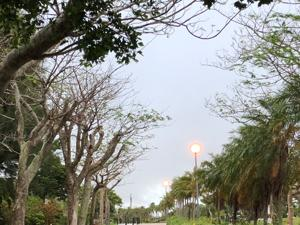
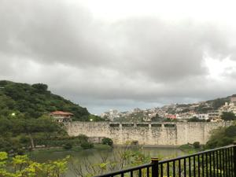

うるがいの話 ある日
最新: オオシマゼミうるがいとは 前提知識です
カニの画像をクリックすると『うるがいの話』サイトを表示します|
|
【うるがいの話】 うるがい(ｳﾙｶﾞｲ urugai)とは、『もずくがに』の名前でとても大きくなります。 |
|---|---|
|
|
【Got cat カミマヤーの話】 たながー（ﾀﾅｶﾞｰtanagaa）とは手長えびのことで、何種類かあり大きいのは車 エビぐらいになります。 |

|
【ぶながぁの話】 ぶながー(bunagaa)とは、赤い髪の毛、赤い身体、そして身長は１ｍ２０ｃｍ ぐらい、川の蟹を食べているの目撃された。場所は沖縄県国頭郡大宜味村のと ある村僕の隣近所に住んでいる爺さんから、聞いた話です。 |
|
|
【ギーマの話】 ギーマ(giima)とは、山原の里山に咲くスズランに似た、 花を付けます。実は食べられます、 気が付くと口の周りが紫になっています。 |
2021年10月20日 (水）オオシマゼミ
18:33
 
昼前裏庭で、蝉がないている。姿を捜すが探せない、仕方ないので音だけ収録
する。蝉の名前は、オオシマゼミというらしい。秋になると山原の山の中に行
くと、うるさい程ないていた。ここ数日の寒さで、『うるがい』が上流から海
へ向かって川を下っていく時期だ。毎年、川へ行きたいと思うのだが今年も行
かない。